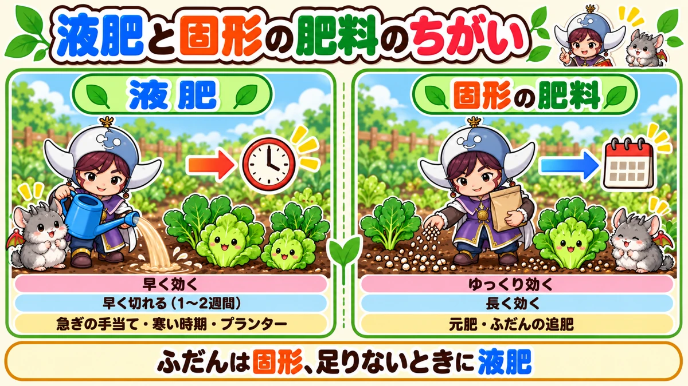
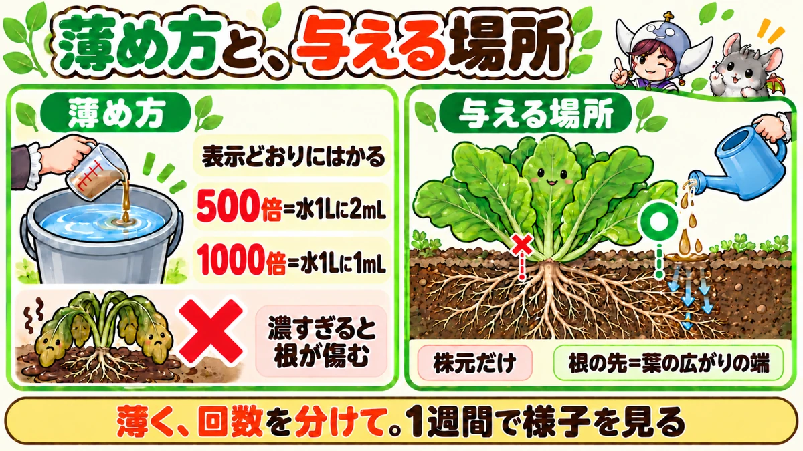
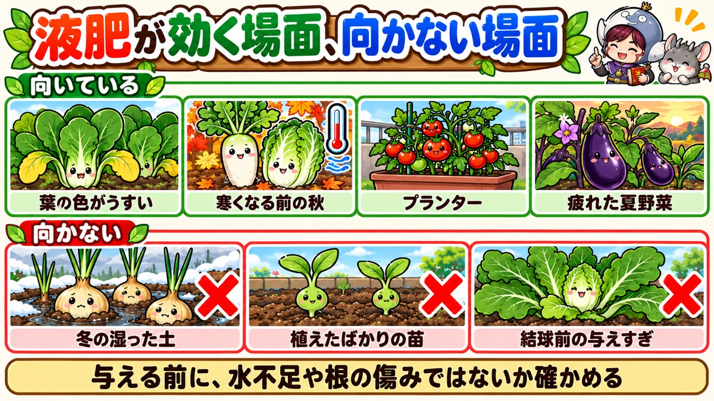

液肥（液体肥料）の使い方の決定版｜効く場面と効かない場面、薄め方、手作り液肥の作り方と注意点
📖 この記事の目次
この記事で分かること
- 液肥（液体肥料）は、水に溶けた肥料です。土にしみこむとすぐ根に届くので、固形の肥料より早く効きます。そのかわり、効き目が切れるのも早いのが特徴です。
- 向いているのは、葉の色がうすいなど急いで肥料を補いたいとき、寒くなって固形の肥料が効きにくい秋、水やりのついでに追肥できるプランター、夏の終わりに弱ってきた株をもう一度元気にしたいとき、などです。
- 向かないのは、冬に土が湿ったままのとき、元肥の代わりにするとき、窒素を効かせすぎると困る野菜（白菜やキャベツの結球前など）です。
- いちばん大切なのは「薄く、回数を分けて」。濃すぎる液肥は、かえって根を傷めます。
- 与える場所は、株元ではなく、根の先が伸びている株のまわり。葉の広がりの端あたりが目安です。
- 油かすや鶏ふんで手作りもできます。においとガスに注意し、ペットボトルのふたはゆるめておきます。
夏の終わり、なすの株がなんとなく元気をなくしてきた。秋にまいたほうれん草の葉が、黄色っぽくて育たない。プランターのミニトマトに追肥をしたいけれど、固形の肥料をまくのは少し面倒。そんなときに頼りになるのが、液肥です。
ただ、液肥は「早く効く」ぶん、使い方をまちがえると、根を傷めたり、すぐ肥料切れを起こしたりします。この記事では、液肥と固形の肥料のちがいから、効く場面と向かない場面、薄め方と与える場所、手作り液肥の作り方と注意点、野菜ごとの使い方まで、順番に書いていきます。
早見：液肥と固形の肥料のちがい
液肥
- 形：水に溶けている、または水で薄めて使う
- 効くまでの早さ：早い。数日で葉の色が変わってくることも
- 効き目の長さ：短い。1〜2週間ほどで切れることが多い
- 使いかた：じょうろで水やりのように与える
- 向いている使い道：追肥、急ぎの手当て、プランター、寒い時期のひと押し
固形の肥料（化成肥料、油かす、鶏ふんなど）
- 形：粒や粉
- 効くまでの早さ：化成肥料はわりと早い。油かすや鶏ふんは、土の中で分解されてから効くので、ゆっくり
- 効き目の長さ：長い。数週間から1か月以上
- 使いかた：株のまわりにまいて、土と軽く混ぜる
- 向いている使い道：元肥、定期的な追肥
使い分けの考えかた
ふだんの追肥は固形の肥料、急ぎのときや、寒くて固形の肥料が効きにくいときは液肥、と考えると分かりやすくなります。液肥だけで育てようとすると、何度も与える必要があり、手間がかかります。固形の肥料を土台にして、液肥は「足りないときの手当て」として使うのが、家庭菜園では使いやすい形です。

液肥の種類
市販の液肥
ホームセンターや園芸店で売っている液肥には、いくつかのタイプがあります。
- 原液タイプ：こい液を、水で薄めて使います。少量で長く使えるので、畑で使うならこのタイプが向いています
- ストレートタイプ：はじめから薄めてあり、そのままかけられます。手軽ですが、量のわりに値段が高めです。プランターで少し使うときに便利です
- 粉や粒を水に溶かすタイプ：水に溶かしてから使います。保存しやすいのが良いところです
成分の表示を見る
袋やボトルには、窒素、りん酸、カリの割合が数字で書いてあります。同じ液肥でも、商品によって割合がちがいます。
- 窒素：葉や茎を育てる。葉物野菜、葉の色がうすいとき
- りん酸：花や実をつける。トマト、なす、きゅうりなど実のなる野菜
- カリ：根を育て、株を丈夫にする。根菜、夏の終わりの疲れた株
実のなる野菜には、りん酸が多めのもの、葉物には窒素が多めのもの、と選ぶと効き目を出しやすくなります。買うときに、表示の数字を確かめてください。
表示の数字の読みかた
袋やボトルに「6-10-5」のように3つの数字が並んでいたら、左から順に、窒素、りん酸、カリが、それぞれ何%入っているかを表しています。この例なら、りん酸がいちばん多いので、実のなる野菜や花に向いたタイプです。反対に、左の数字（窒素）がいちばん大きいものは、葉物向きです。3つの数字が同じくらいのものは、どの野菜にも使いやすい、平均的なタイプです。
活力剤とのちがい
液肥と同じような売り場に、「活力剤」と書かれた液体が並んでいることがあります。活力剤は、肥料の3つの成分がほとんど入っていない、または、ごく少ないものが多く、肥料の代わりにはなりません。肥料が足りないときは、窒素、りん酸、カリの数字が書いてある液肥を選びます。
手作りの液肥
油かすや鶏ふんを水に漬けて、発酵させて作る液肥です。材料費が安く、有機の肥料で育てたい人に向いています。
- 油かすの液肥：窒素が多めです。葉の色がうすいとき、葉物野菜の手当てに向いています
- 鶏ふんの液肥：りん酸が多めです。実のなる野菜や、育ちの後半の野菜に向いています
作り方と注意点は、後でくわしく書きます。
肥料が足りないかどうかの見分け方
液肥を与える前に、本当に肥料が足りないのかを確かめます。肥料が足りないように見えて、じつは水不足や根の傷みが原因、ということもよくあります。原因がちがえば、液肥を与えても良くなりません。
肥料（窒素）が足りないしるし
- 下の古い葉から、全体が均一に黄色くなっていく
- 新しく出てくる葉も、色がうすく黄緑っぽい
- 葉が小さく、株全体の育ちが遅い
- まわりの同じ野菜にくらべて、ひとまわり小さい
水が足りないしるし
- 昼間に葉がしおれ、夕方や朝には元に戻る
- 土を指で5cmほど掘ってみると、中まで乾いてぱらぱらしている
- 葉の色はそれほど悪くない
この場合は、液肥より先に、たっぷりの水やりが必要です。
肥料が多すぎるしるし
- 葉の色が濃い緑で、葉ばかり茂っている
- 花は咲くが、実がつきにくい
- アブラムシなど、汁を吸う虫が増えている
この場合に液肥を与えると、さらに悪くなります。肥料はしばらく控えます。
根が傷んでいるしるし
- 水をやっても、しおれが戻らない
- 株元がぐらつく、茎の根元が変色している
- 土の中から虫（コガネムシの幼虫など）が出てくる
根が傷んでいると、肥料を吸う力そのものが落ちているので、液肥を与えても効きません。原因になっている病気や虫の対策を先にします。
判断に迷ったら
まず水やりの具合を確かめ、次に虫や病気がないかを見て、それでも下の葉から黄色くなっているなら、肥料不足と考えて液肥を試します。1回与えて1週間ほど様子を見れば、葉の色の変化で、肥料不足だったかどうかが分かります。
液肥が向いている場面
1. 葉の色がうすく、急いで肥料を補いたいとき
下の葉から黄色くなってくる、新しい葉の色も黄緑っぽい、というのは、窒素が足りないときによく出る症状です。固形の肥料をまいても、効きはじめるまでに時間がかかります。こういうときは、液肥で急いで補います。
2. 寒くなってきた秋
気温が下がってくると、土の中の微生物の働きがにぶり、油かすや鶏ふんなどの有機の肥料は、分解されにくくなります。10月の後半になってから固形の肥料で追肥しても、効きはじめるころにはもう寒くなっていて、間に合わないことがあります。秋にまいた葉物や大根の育ちが悪いときは、本格的に寒くなる前に、液肥で窒素を補っておくと、もうひと伸びさせられます。
3. プランター
プランターは土の量が少なく、水やりのたびに肥料分が流れ出しやすいので、肥料切れを起こしやすくなります。液肥なら、水やりのついでに追肥ができるので手軽です。
4. 夏の終わりに弱ってきた株
なすやピーマンなど、夏から秋まで長くとる野菜は、夏の暑さや乾燥で、株が疲れてくることがあります。根がしっかりしていて、新しい芽や花がまだ出ている株なら、液肥で元気を取り戻し、秋の収穫につなげられることがあります。ただ、花も新しい芽も出ていない、すっかり弱った株は、液肥を与えても持ち直すのは難しいでしょう。
5. 根の近くに固形の肥料をまきにくいとき
マルチを張っている畑や、株が混みあっていて固形の肥料をまく場所がないときも、液肥なら、マルチのすそを少し持ち上げて流しこむことができます。
6. 苗の育ちが悪いとき
ポットで苗を育てていると、植えつけまでのあいだに、ポットの小さな土の肥料が足りなくなり、下の葉が黄色くなってくることがあります。こういうときは、表示よりさらに薄めた液肥を与えると、植えつけまでの育ちを支えられます。苗は根が小さく、濃い肥料に弱いので、薄めを守ります。
液肥が向かない場面
冬に土が湿ったままのとき
冬は土が乾きにくく、湿った状態が続きます。そこへ液肥を与えると、水分がさらに多くなり、根が窮屈になります。玉ねぎやにんにくなど、冬を越す野菜の追肥は、土が乾いているときを選ぶか、少量の固形の肥料で行います。
真夏の暑い日中
暑い日中に液肥を与えると、土の中の温度が高く、根が弱っていることもあります。与えるなら、朝や夕方の涼しい時間にします。真夏は、まず水切れを起こさないことのほうが大切です。
大雨の前
液肥は水に溶けているので、与えたあとに大雨が降ると、根に吸われる前に、雨といっしょに流れてしまいます。天気予報を見て、雨の前日は避けます。
元肥の代わり
液肥は効き目が短いので、植える前の土に入れておく元肥の代わりにはなりません。元肥は、堆肥や固形の肥料で入れておきます。
窒素を効かせすぎると困る野菜
白菜やキャベツは、育ちの後半に窒素が多すぎると、葉ばかりが伸びて、うまく巻かないことがあります。こうした野菜の後半には、窒素の多い液肥を与えすぎないようにします。にんじんや大根も、葉が茂りすぎると根が太りにくくなるので、葉の色が濃く元気なときは、液肥は必要ありません。
市販の液肥の使い方
1. 表示どおりに薄める
いちばん大切なのは、袋やボトルに書いてある倍率を守ることです。「よく効かせたいから」と濃くすると、かえって根を傷めます。不安なときは、表示より薄めにします。
- 500倍：水1Lに、液肥2mL
- 1000倍：水1Lに、液肥1mL
計量カップやスポイト、ボトルのキャップの目盛りを使って、きちんとはかります。目分量でどぼどぼ入れないようにします。
2. 土が乾いているときに与える
土が湿っているときに与えるより、表面が乾いてきたときに、水やりの代わりに与えるほうが、根によく吸われます。
3. 根の先に向けて与える
根から肥料を吸うのは、主に根の先のほうです。根は、だいたい葉が広がっている幅と同じくらいまで伸びています。株元にだけかけるのではなく、葉の広がりの端あたり、株から少し離れたところに、ゆっくりとしみこませます。
4. 回数を分ける
液肥は効くのが早いぶん、切れるのも早くなります。一度にたくさん与えるより、薄いものを、間をあけて何回かに分けて与えます。与えたあとは、1週間ほど様子を見て、葉の色が戻ってきているかを確かめます。
5. 与えすぎない
葉の色が濃くなり、元気になってきたら、液肥はやめます。肥料が多すぎると、葉ばかり茂って実がつきにくくなったり、虫が寄りやすくなったりします。

じょうろで与えるときの手順
1. バケツで薄める
じょうろの中で直接薄めるより、バケツに水を入れて、はかった液肥を加え、棒などでよく混ぜてから、じょうろに移すほうが、ムラなく混ざります。
2. はす口をつけて、ゆっくり注ぐ
はす口をつけたまま、株のまわりの土に、ゆっくりと注ぎます。勢いよくかけると、土がえぐれて根が出てしまったり、液がしみこまずに流れていったりします。
3. マルチをしている畑では
マルチのすそを少し持ち上げて、株から少し離れたところに流しこみます。植え穴から株元にだけ注ぐと、根の先まで届きにくくなります。
4. 1株ずつ、同じくらいの量を
畝の端から順に、1株ずつ、同じくらいの量を与えていきます。弱っている株にだけ多く与えたくなりますが、量を変えるより、回数で調整します。
5. 使ったじょうろは、水でよく洗う
液肥が残ったままのじょうろで、苗やタネまきの水やりをすると、思わぬ濃さになることがあります。使い終わったら、水でよくすすいでおきます。
手作り液肥の作り方
用意するもの
- ペットボトル（500mL〜2Lくらい）
- じょうご（なければ、紙を丸めて代わりに）
- 計量カップ、スプーン
- 発酵済みの鶏ふん、または油かす
- 油性ペン（ボトルに中身と作った日を書く）
家庭菜園なら、500mLのペットボトル1本ぶんで、しばらく使えます。はじめは少なく作って、使い切れる量を知ってから増やします。
鶏ふんの液肥
- 500mLくらいのペットボトルを用意します
- 発酵済みの鶏ふんを、ボトルの1割くらい（50mLほど）入れます。こぼれやすいときは、じょうごを使います
- 水を入れて、よく振ります
- キャップは少しゆるめた状態で、日の当たらない場所に置きます
- 3日に1回くらい、キャップを締めてよく振り、また少しゆるめておきます
- 1〜2週間ほどで、鶏ふんの養分が水に溶け出して使えるようになります。上の澄んだ液を使います
発酵済みの鶏ふんを使うと、においは比較的少なめです。
油かすの液肥
- 油かすと水を、1対10くらいの割合でペットボトルに入れます
- よく振って、キャップを少しゆるめておきます
- ときどき振って混ぜます
- 発酵が進むと、黒っぽい液になります。上澄みを使います
油かすの液肥は、そのまま作ると、発酵するときにアンモニアのような強いにおいが出ます。乳酸菌を加えると、においが少なくなると言われています。手軽な方法として、乳酸菌飲料を少し加えて作る人もいます。
いちばん気をつけること：ガスとにおい
- 発酵中はガスが出ます。キャップを固く締めたままにすると、ペットボトルがふくらんで破れることがあります。キャップは少しゆるめておきます
- においが強いので、家の中や、近所の家の窓の近くでは作りません
- 服につくと、なかなかにおいが取れません。開けるときは、顔を近づけすぎないようにします
- 子どもやペットが、まちがえて飲まないよう、手の届かない場所に置き、中身が分かるように書いておきます
薄めかた
手作りの液肥は、作った液をさらに水で薄めて使います。濃さは、材料の量や発酵の具合で変わるので、市販品のように決まった倍率はありません。鶏ふんの液は5〜10倍くらい、油かすの液はそれよりずっと薄く100〜500倍くらいに薄めて使う、という紹介が多く見られます。はじめは薄めにして、葉の様子を見ながら調整します。
手作りでうまくいかないとき
- においが強すぎる：油かすの液肥は、においが出やすいものです。乳酸菌を加える方法を試すか、においの少ない鶏ふんの液肥にします
- ボトルがふくらむ：キャップの締めすぎです。少しゆるめて、ガスを逃がします
- 底に沈んだものが固まる：ときどき振って混ぜます。使うときは、上の澄んだ液だけを取ります
保管
日の当たらない、涼しい場所に置きます。使いきれない量を作らないよう、家庭菜園なら500mLのペットボトル1本くらいで十分です。
鶏ふんの液肥と油かすの液肥の使い分け
- 葉の色がうすい、葉物を早く育てたい → 窒素の多い油かすの液肥
- 実のなる野菜、育ちの後半、結球する野菜 → りん酸の多い鶏ふんの液肥
- どちらか迷ったら → 鶏ふんの液肥を薄めに。窒素の効きすぎが起きにくい
両方を作っておき、半分ずつ混ぜて薄めて使う人もいます。窒素とりん酸を両方補えるので、夏の終わりの疲れたなすなどに向いています。
野菜ごとの使い方
なす、ピーマン
夏の終わりに株が疲れてきたら、固形の肥料での追肥と合わせて、液肥で手当てします。根がまだしっかりしていて、新しい芽や花が出ている株なら、液肥で秋の収穫につなげられることがあります。株から少し離れた、根の先あたりに、たっぷりとしみこませます。1週間ほどあけて、もう1回与えます。
きゅうり
実を次々にとっていると、株が疲れて、曲がった実や先の細い実が増えてくることがあります。固形の肥料での追肥に加えて、薄めた液肥で手当てすると、勢いを取り戻しやすくなります。きゅうりは根が浅く広く張るので、株から少し離れた、畝の表面全体にしみこませるように与えます。
トマト
葉の色がうすい、下の葉から黄色くなるなど、肥料が足りないしるしが出たときに使います。液肥は、薄める倍率をまちがえると根を傷めるので、慣れないうちは、固形の鶏ふんを株から20cmほど離れたところに埋める方法のほうが安心です。液肥を使うなら、マルチのすそを持ち上げて、株から少し離れたところに流しこみます。
にんじん
育ちの途中で、葉の先が黄色くなってきたら、窒素が足りないしるしです。固形の肥料をまくと、塊が根に当たって、また根が分かれる原因になることもあるので、液肥で補う方法が向いています。葉が大きく茂りすぎているときは、与えません。
ほうれん草、小松菜など葉物
葉の色がうすいときに、窒素の多い液肥を、薄めにして与えます。葉物は肥料が多すぎても、葉がやわらかくなりすぎたり、虫が寄りやすくなったりするので、色が戻ったらやめます。
大根、白菜、キャベツ
秋に育ちが遅れているときは、寒くなる前に液肥で補います。白菜やキャベツは、巻きはじめてからの窒素の与えすぎに気をつけ、りん酸の多い鶏ふんの液肥などを使います。
秋の葉物の育ちが遅れたとき
秋の終わりに、葉物や大根の下の葉が黄色くなり、新しい葉の色も黄緑色になっていたら、典型的な窒素不足です。寒くなって気温が下がりきる前に、液肥で窒素を補っておくと、収穫までにもうひと回り大きくできます。このタイミングを逃すと、そのまま小さいまま収穫を迎えることになります。
ブロッコリー
わき芽を長くとる場合は、月に1回くらい追肥を続けます。寒い時期は、固形の肥料が分解されにくいので、液肥を使うと早く効きます。暖かくなってきたら、固形の肥料に戻してもかまいません。
玉ねぎ、にんにく
冬のあいだは、土が湿っていることが多いので、液肥より固形の肥料での追肥が向いています。液肥を使う場合は、土が乾いているときを選びます。
プランターの野菜
水やりのついでに、表示どおりに薄めた液肥を与えます。頻度は、商品の表示に従います。鉢の底から流れ出るくらいたっぷり与えると、土の中の古い肥料分も入れ替わります。

固形の肥料との組み合わせ方
秋冬野菜（白菜、大根、ブロッコリーなど）
- 植える前：堆肥と元肥を入れる
- 植えて2〜3週間後から：固形の肥料で追肥
- 10月後半〜11月：育ちが遅れていたら、寒くなる前に液肥で補う
- 寒い時期：固形の肥料は効きにくいので、必要なら液肥で
秋は、気温が下がるほど固形の肥料が効きにくくなります。「遅れているな」と思ったら、早めに液肥で手当てしたほうが、間に合いやすくなります。
夏野菜（なす、ピーマン、トマトなど）
- 植える前：堆肥と元肥を入れる
- 実がつきはじめたら：2〜3週間ごとに固形の肥料で追肥
- 葉の色がうすい、実のつきが悪いとき：液肥で手当て
- 夏の終わり：疲れた株に、固形の追肥と液肥を合わせて
プランター
- 植える前：元肥入りの培養土、または元肥を混ぜる
- 根がついてから：液肥を表示の頻度で、水やりのついでに
- ゆっくり効く粒の肥料を、表示どおりに置いておく方法と組み合わせると、液肥の回数を減らせます
季節ごとにやること（一般的な地域の目安）
- 4〜5月：植えつけ直後の苗には与えない。根がついて新しい葉が出てきてから、必要なら薄めに
- 6〜7月：プランターの夏野菜に、水やりのついでに定期的に
- 8〜9月：夏の暑さで疲れたなす、ピーマンに。秋の葉物や大根の育ちが遅れていたら
- 10〜11月：寒くなる前の最後のひと押し。固形の肥料が効きにくくなるので、液肥で
- 12〜2月：土が湿っているときは控える。ブロッコリーのわき芽どりなど、必要なものだけ
説明が分かれるところ
葉にかけてもいいか（葉面散布）
液肥を薄めて葉にかけると、葉からも吸われて、早く効く、という方法があります。かなり薄めた液肥なら葉にかけても問題ない、という人がいる一方で、濃さによっては葉を傷めることもあります。また、手作りの液肥は、においが強く、葉にかけると食べるときに気になることもあります。基本は土に与え、葉にかけるなら、表示に葉面散布ができると書いてある市販品を、表示どおりに使います。
手作りの液肥の薄め倍率
手作りの液肥は、同じ材料でも、作る人によって紹介している倍率がかなりちがいます。濃さが一定にならないので、決まった正解はありません。はじめは薄めにして、葉の色や育ちを見ながら調整するのが安全です。
有機の液肥と化成の液肥、どちらがいいか
有機の液肥は、土の微生物のえさにもなる一方、においが出たり、効き目にばらつきが出たりします。化成の液肥は、成分がはっきりしていて、においもなく扱いやすい一方、土づくりの効果はありません。急ぎの手当てなら化成、有機で育てたいなら手作りや市販の有機液肥、と目的で選べばよいでしょう。
活力剤を与えていれば、肥料はいらないか
活力剤は、根の張りを助けるなどの目的で使われるものですが、多くは肥料の成分がわずかで、肥料の代わりにはなりません。肥料が足りないときは、肥料の成分が書かれた液肥や固形の肥料で補います。
よくある失敗
早く効かせたくて、濃くした
かえって根が傷み、株がしおれることがあります。液肥は「薄く、回数を分けて」が基本です。
株元にばかりかけていた
株元の太い根は、肥料をあまり吸いません。葉の広がりの端あたり、根の先に向けて与えます。
液肥だけで育てようとした
効き目が短いので、何度も与える必要があり、手間がかかります。元肥と固形の追肥を土台にして、液肥は手当てに使います。
植えたばかりの苗に与えた
根がまだ落ち着いていないので、肥料を吸う力が弱く、かえって根を傷めることがあります。植えつけ直後は水だけにします。
しおれているのを肥料不足と思いこんだ
昼にしおれて夕方に戻るのは、たいてい水不足です。水を与えても戻らないなら、根の傷みを疑います。液肥はそのあとです。
ペットボトルのふたを固く締めていた
発酵のガスで、ボトルがふくらんで破れることがあります。キャップは少しゆるめておきます。
冬の湿った土に、液肥をたっぷり与えた
土がいつまでも乾かず、根が弱ることがあります。冬は、土が乾いているときを選ぶか、固形の肥料を使います。
よくある質問
液肥を与えたら、どれくらいで効きますか
条件がよければ、数日から1週間ほどで、葉の色が濃くなってきます。1週間ほどたっても変わらないときは、肥料以外の原因（水不足、根の傷み、病気、虫など）も疑います。
毎日与えてもいいですか
与えすぎになります。市販品は表示の頻度を守り、手作りの液肥も、1週間くらいは間をあけて様子を見ます。
植えたばかりの苗に与えてもいいですか
植えたばかりの苗は、根がまだ傷ついていることがあり、肥料を吸う力も弱いので、与えません。根がついて新しい葉が出てきてから、必要なら薄めに与えます。
雨が続いたあとに、葉の色がうすくなりました
雨が続くと、土の中の肥料分が流れてしまうことがあります。晴れて土が少し乾いてから、薄めた液肥で補います。雨のあとすぐの、土がぐっしょりしているときは避けます。
余った液肥は、とっておけますか
市販の原液は、ふたを閉めて日の当たらない場所に置けば、表示の期間は使えます。水で薄めたあとのものは、その日のうちに使いきります。
米のとぎ汁は液肥になりますか
米のとぎ汁には、ぬかの成分が少し含まれますが、肥料としての成分はわずかです。そのまま大量にかけると、においやかびのもとになることもあります。肥料として当てにするより、液肥や固形の肥料を使うほうが確かです。
1株にどれくらいの量を与えればいいですか
株のまわりの土が、根の先のあたりまでしっとり湿るくらいが目安です。表面をぬらすだけでは、根まで届きません。かといって、畝の外まで流れ出すほどかけると、むだになります。少しずつ注いで、しみこむのを待ちながら与えます。
有機で育てていますが、化成の液肥を使ってもいいですか
どの肥料を使うかは、育てる人の考え方しだいです。有機の材料だけで育てたいなら、手作りの液肥や、有機の原料で作られた市販の液肥を選びます。こだわりがなければ、急ぎの手当てに化成の液肥を使うのも、ひとつの方法です。
液肥のあとに、水やりも必要ですか
液肥は水やりを兼ねているので、同じ日に、別に水やりをする必要はありません。土がひどく乾いているときは、先に少し水をやって土を湿らせてから液肥を与えると、しみこみやすくなります。
液肥を与えたら、虫が増えた気がします
窒素が多くなると、葉がやわらかく茂り、アブラムシなど汁を吸う虫が寄りやすくなります。葉の色が戻ったら、液肥はやめておきます。
手作りの液肥に、白いかびのようなものが浮いています
発酵の途中で、表面に白い膜ができることがあります。強い腐ったようなにおいでなければ、上澄みを薄めて使えることが多いですが、気になるときは使わずに、土に埋めて処分します。
液肥を与える前のチェックリスト
- 下の葉から黄色くなっているか。水不足や根の傷みではないか
- 葉の色が濃すぎたり、葉ばかり茂ったりしていないか（それなら与えない）
- 植えつけ直後の苗ではないか
- 土は乾きぎみか。冬に湿ったままになっていないか
- 今日は暑い日中ではないか。明日は大雨の予報ではないか
- 液肥の倍率は、表示どおりにはかったか。不安なら薄めにしたか
- 与える場所は、株元ではなく、葉の広がりの端あたりか
- 前に与えてから、1週間くらいたっているか
このうち、ひとつでも引っかかるものがあれば、その日はやめておくか、原因のほうを先に手当てします。
学ぶ：液肥が効くしくみ🔬
なぜ、液肥は早く効くのか
植物の根は、水に溶けた肥料分しか吸うことができません。油かすや鶏ふんなどの有機の肥料は、土の中の微生物に分解されて、水に溶ける形になってから、はじめて根に吸われます。固形の化成肥料も、土の水に溶けてから効きます。液肥は、はじめから水に溶けているので、土にしみこむと、すぐに根が吸える状態になっています。これが、液肥が早く効く理由です。
有機の肥料が、根に吸われるまで
油かすや鶏ふんに含まれる窒素は、そのままでは根に吸われません。まず土の中の微生物が、たんぱく質などを分解してアンモニアに変えます。さらに別の微生物が、アンモニアを、根が吸いやすい形（硝酸の形の窒素）に変えます。この2つの段階を経て、ようやく野菜の栄養になります。手作りの液肥は、この分解の一部を、ペットボトルの中で先に進めておくもの、と考えると分かりやすいでしょう。だから、固形のままよりも早く効くのです。
なぜ、濃すぎると根が傷むのか
根は、まわりの土の水よりも、根の中のほうが濃い状態のときに、水を吸いこむことができます。ところが、濃い液肥を与えると、根のまわりの水のほうが濃くなってしまいます。すると、水は濃いほうへ移ろうとするので、反対に根の中の水が外へ吸い出されてしまいます。これを浸透圧の働きと言います。濃すぎる液肥で株がしおれたり枯れたりするのは、このためです。
なぜ、寒くなると液肥が役に立つのか
油かすなどの有機の肥料を分解する土の微生物は、気温や地温が下がると、働きがにぶくなります。寒い時期に有機の肥料を固形でまいても、分解が進まず、なかなか効きません。液肥は、はじめから溶けているので、分解を待たずに根に届きます。寒くなる前のひと押しに液肥が向いているのは、このためです。
窒素が足りないと、なぜ下の葉から黄色くなるのか
窒素は、葉を緑色にしている葉緑素の材料です。窒素が足りなくなると、植物は、古い下の葉から窒素を引き出して、これから育つ新しい葉に回します。そのため、下の葉から先に黄色くなっていきます。下の葉の黄ばみは、肥料切れを知らせる、いちばん分かりやすいしるしです。
なぜ、根の先に与えるのか
根が水や肥料を吸うのは、主に根の先の、細くてやわらかい部分です。ここには、根毛という、とても細い毛のようなものがたくさん生えていて、土と触れる面積を広げています。株元に近い太い根は、水や養分を運ぶ通り道としての役目が中心で、吸う力はあまり強くありません。根の先は、葉の広がりの端あたりまで伸びていることが多いので、そこをねらって与えると、よく吸われるのです。
りん酸とカリは、何をしているのか
りん酸は、植物の体の中でエネルギーをやりとりする働きにかかわり、花や実をつけるときや、根を伸ばすときにたくさん使われます。カリは、細胞の中の水の量を調節したり、作った養分を実や根に運んだりする働きにかかわっています。夏の終わりの疲れた株や、実をつけ続ける野菜に、りん酸やカリの多い液肥が向いているのは、このためです。
まとめ
ここまで読んでくださって、ありがとうございます！
液肥の使い方のポイントを、もう一度まとめておきます。
- 液肥は早く効いて、早く切れる。ふだんは固形の肥料、急ぎや寒い時期は液肥で手当て
- 向いている：葉の色がうすいとき、寒くなる前の秋、プランター、夏の終わりの疲れた株
- 向かない：冬の湿った土、元肥の代わり、結球前の白菜やキャベツへの与えすぎ
- 表示どおりに薄める。不安なら薄めに。濃すぎると根の水が吸い出される
- 株元ではなく、葉の広がりの端あたり、根の先に向けて与える
- 薄く、回数を分けて。1週間ほどで様子を見る
- 手作りは、においとガスに注意。キャップはゆるめ、日の当たらない場所で
- 与える前に、水不足や根の傷みではないかを確かめる。昼にしおれて夕方戻るなら水不足
- 暑い日中と大雨の前は避けて、朝か夕方に
まずは今度の見回りで、下の葉の色を見てみてください。黄色っぽくなっていたら、薄めた液肥を、株から少し離れたところに1回与えて、1週間後の葉の色を比べてみましょう🌱
液体肥料
窒素・りん酸・カリが入った液肥。水で薄めて、葉の色がうすいときや寒くなる前のひと押しに。倍率は表示どおりに。
![[商品価格に関しましては、リンクが作成された時点と現時点で情報が変更されている場合がございます。]](https://hbb.afl.rakuten.co.jp/hgb/56bc2da1.2bf36c6e.56bc2da2.7b66fad7/?me_id=1347284&item_id=10000008&pc=https%3A%2F%2Fthumbnail.image.rakuten.co.jp%2F%400_mall%2Fmandahakko%2Fcabinet%2Fsyokubutsumanda%2F260306_smn_amn5004.jpg%3F_ex%3D240x240&s=240x240&t=picttext "[商品価格に関しましては、リンクが作成された時点と現時点で情報が変更されている場合がございます。]")

じょうろ
はす口をつけて、株から少し離れた根の先あたりに、ゆっくりしみこませます。使ったあとは水ですすぎます。

鶏ふん
ふだんの追肥は固形の肥料で。液肥は足りないときの手当てとして組み合わせます。
![[商品価格に関しましては、リンクが作成された時点と現時点で情報が変更されている場合がございます。]](https://hbb.afl.rakuten.co.jp/hgb/55e7612a.7de1526b.55e7612b.01a50904/?me_id=1214866&item_id=10002182&pc=https%3A%2F%2Fthumbnail.image.rakuten.co.jp%2F%400_mall%2Fkaju%2Fcabinet%2F00714580%2F03462454%2F07486601%2Fimgrc0071643813.jpg%3F_ex%3D240x240&s=240x240&t=picttext "[商品価格に関しましては、リンクが作成された時点と現時点で情報が変更されている場合がございます。]")
次に読む
記事一覧へ